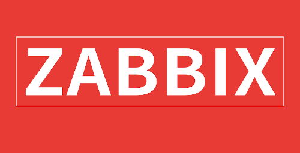

Zabbix Agent主动模式
1. 主动模式与被动模式
默认情况下，Zabbix Agent是被动模式。被动模式下，Zabbix Server会一个监控项一个监控项地向 Zabbix Agent 上获取，获取非常频繁，消耗更多的资源。被动模式最大的特点是监控项更新几乎都是间隔1s。主动模式下，Zabbix Agent 主动去找 Zabbix Server 获取任务清单，Zabbix Server 会把任务清单发给 Zabbix Agent。这样 Zabbix 就受到了这些监控项，Zabbix Agent采集这些监控项，一次性 发给 Zabbix Server。当然一次性发送的监控项的数目也是有限制的。
2. 批量设置主动模式
监控项的类型就可以看出使用了被动模式还是主动模式，如果类型是“Zabbix客户端”，则就是默认的被动模式：

可以从模板中修改，模板修改后，模板中对应的监控项也会随后发生改变。也可以到主机监控项中修改都是可以的，但是在主机监控项修改后，模板中的监控项是不会生效的，模板中的监控项是全局作用的。修改时间间隔什么的也是同样的道理：


3. 简单检查类型
简单检查是 Zabbix Server 向 Zabbix Agent 要数据，一般用在：

vmware中用到的就是简单检查类型：

4. snmp模式队列阻塞的处理
建议升级 Zabbix 的版本，旧版本容易出现阻塞现象，如果是新版本，在创建主机或者修改主机信息时可以勾选 使用最大量需求 可以提高性能：